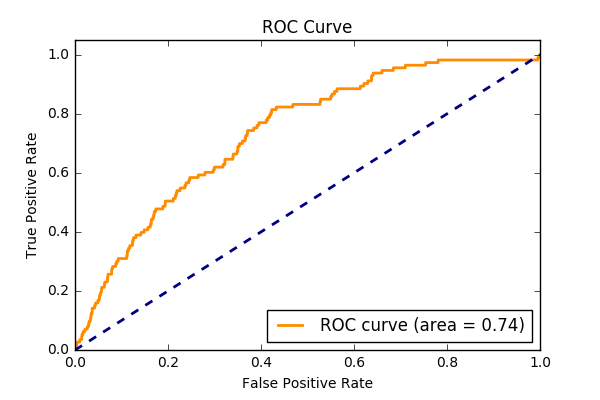

Understanding User Behavior to Optimize Ad CTR
Introduction
Digital Advertising is a multi-billionaire industry that is forecasted to grow globally from $135 billion in 2014 to $240 billion in 2019. As businesses such as e-commerce websites, ad display networks as well as big names such as Google and Facebook rely heavily on ads as a source of income, the ability to predict which ad a user will click is pivotal in ensuring advertising success and highest return on investment. By understanding patterns in user behavior, advertisers can provide more relevant content to maximize ad CTR and improve the user experience. In this project, I explore factors that contribute to a user’s likelihood of clicking on an ad and build a supervised learning algorithm designed to predict the probability a user will click a given ad.
Data Description
Avito, Russia’s largest general classified website allows sellers to place ads on their site for a wide variety of items from electrionics to cars to dogs and cats. Avito had over 31 million active listings in 2015. Although Avito provides a great wealth of goods and services for it's 70 million unique monthly visitors, the task of deciding which ads to show for each individual users is difficult. At the time, Avito used only general statistics on ad performance, not taking into account user behavior, making it difficult to provide relevant ads to its users. To mitigate this, Avito has provided a dataset that contains 300 million randomly sampled users searches from two months. Each row represents an ad that is shown to the user based on a search. The ads listed on Avito’s website consists of three types: regular free ads posted from users, paid ads which are highlighted and placed at the top of the page for a certain time and contextual ads in which the owner pays per visitor click. The goal is to discover insights in user behavior related to ad clicks as well as build a learning algorthm that will predict whether a user will click on a given ad.
Data Prep
The dataset contains a total of 300 million records. Only click labels for contextual ads are provided. For this analysis, I am interested in factors that drive ad clicks so I drop all rows containing non contextual ads which amounts to 190 million records. Additionally, the entire dataset is about 40gb in size so a smaller subset of the first 500,000 records is used for this initial analysis due to memory constraints as well as computation time.
Overall Website Activity
To begin, let's get an overall picture of how click activity looks during the week. It may reveal errors in the data and it'll give us a better understanding of when the site receives the most traffic.
We can see the lowest number of clicks occur from 1AM to 8AM which makes sense since most people are asleep at this time. Click activity starts to pick up from 8AM to 9AM which is when most people wake up. From 10AM to 10PM is when click traffic is most dense and it seems to stays steady during this window. After 10PM, when most people are sleeping, click activity starts to slow down. So it seems nothing too weird is happening, the data makes sense and now we know the optimal times to serve ads to users.
Search Users vs. Filter Users vs. No Filter & No Search
Now that we have a general idea about when clicks are occuring, we can go another layer deeper to find out what factors are driving these clicks. I was particularly interested in the question: how does ad click performance differ from users who enter a search query versus users who just click the filter by category option?
Only 18% of users enter a search query which isn't too surprising because we expect most people who first land on a site to be just browsing. Most users don't go to a site knowing exactly what they want to buy before doing any sort of exploring beforehand. What's really striking is that users who enter a search query are over two times more likely to click on an ad compared to users who only click on the filter by category option or those who don't search or filter at all! Why is this? Well, one reason may be because users who enter a search query have a specific item in mind and know what they want before coming onto the site. Whereas users who only click on the filter option don’t have a specific item in mind and are still exploring. So as users are less specific, the lower the likeihood of clicking on an ad. How can we help users get more specific in what they're searching for? Since users who are just exploring and aren't sure what they want to buy, we can help them narrow down the options by providing ads that are relevant based on their search behavior. We'll address this further later when I build a learning algorithm to help better serve relevant content but for now lets see if we can discover more about what drives users to click on an ad.
Search User Behavior
What are the top items users are searching for?
Looks like the top item users are searching for is a bike. In fact, of the top six items users are searching for, 35% of the searches are for a bike! Why are so many users searching for a bike?
Well, remember that this dataset is a random sample of user searches from two months? It turns out that the two months are April and May! This is summer time in Russia and in St. Petersburg, May is when the famous White Nights occur. This is the time when locals revel in the heat and night becomes nearly indistinguishable from day with festivals and partying occurring all night. Maybe this is why a bike is at the top of everyone's wishlist, so they could enjoy the outdoors during the summer weather.
Taking another look at user's top searches, it seems like there's some commonality between the items. Bikes, strollers, shoes, sofas and bags all seem like items woman who are just starting a family wth a new child, maybe moving into a new home would buy. So I decided to take a look at Russia's birth rates to see if there's anything interesting going on there.
User Demographics
Total Fertility Rate in Europe, 2014
The map above shows Russia's 2014 Total Fertility Rate. It measures the expected number of children a women will bear in her lifetime. Compared to the rest of Europe, Russia's total fertility rate is quite high. Infact, Russia has faced low fertility, high mortality and emigration following the breakup of the Soviet Union in 1991. In 2007, the Russian government introduced a program to pay $11,000 to mothers who have more than one child and in 2011, Vladimir Putin spent $53 billion to raise birthrates. How interesting! Now that we have this new insight, we have a better idea of the demographic profile ads are attracting as well as who ads should be catered to.
Click Behavior
Now that we have a good understanding of what user's are searching for and why let's see which ads are actually being clicked.
Going back to the user's who searched for a bike, which ads are being shown the most and what are their corresponding CTRs?
We can see a very high level of variability in CTRs for bikes with the top five impressions. The ad with the highest number of impressions has a 2.2% CTR while the second and third have a 0% CTR. The fourth most seen ad has the highest CTR of 4%. There's a major need for improvement here. Why are CTRs so variable? And how can ads with the second and third highest number of impressions have a 0% CTR?
User Preferences

Let's have a look at what user's actually see when they search for a bike. The image above shows the top four items shown to users who search for a bike. The two items on the right have a 0% CTR. and the left two items the highest CTR's. So what's causing this? The key difference is the age group in which the item is designed for. Both items on the left are suited for children between ages 5 to 7 while the item on the top right is for an adult and bottom right for a child under 3 years old. Earlier we hypothesized that the majority of users are young women with a new child, maybe moving into a new home. Now, after digging further into what user's are searching for, we find out that the majority of users who are searching for a bike are buying it for a child between age 5 to 7. How can we improve ad performance with this information? Well for users searching for a bike, we can assume they have a child between age 5 to 7 and reccomend similar items suited for a 5 to 7 year old!
Ad Price Level
Now we know how important it is to provide ads that are relevant to individual preferences. I wanted to take it a step further and see how price levels affect which ad is clicked. More specifically, for the bike search users, what price range are the majority of our users looking to purchanse a bike for?
Impressions are highest in the price range of $50 to $150. But with 12 clicks, it is clear most users are looking to purchase a bike between $100 to $150. Something to look into is to see whether the location of a user affects what price range they choose to click on. I believe where an individual lives is a good indicator of their income which may determine the price level of ads they click. Unfortunately, the user's location have been anonymized in this dataset so we'll have to save this for future analysis.
Summary
Lets recap that we've learned about users while exploring is dataset.
- Click activity is most frequent between 10AM to 10PM.
- Users who enter a search query are over 2x more likely to click on an ad than who use just filter by category.
- Seasonality plays a role on what users search for.
- The majority of users on the site seem to fall in the category of young women with a small child perhaps moving into a new home.
- Items being advertised have many features. It is important to ensure the features match individual preferences.
- The price of an ad plays a role.
Optimizing Ad Performance
Now that we have all these insights in user behavior, how can we maximize the CTR of ads and better serve users? One solution is to build a model that captures the behavior and characteristics of each individual user as well as global factors such as the season and historical ad performance to determine the likelihood of a user clicking a given ad. With this, we can provide more relevant ads to users as well as optimize ad CTRs. It's a winning solution for both buyers and sellers!
Model Performance
Model Insights
The chart above shows some of the noteworthy insights provided by the model. As highlighted from our initial analysis, we see that whether a user entered a search query or not is a high predictor of a user clicking an ad. Furthermore, the model reveals that one of the greatest predictors is the number of ads shown to a user during a search. It would be interesting to see if this holds the same amount of weight for using who enter a search query vs. those who just filter by category. Perhaps users are less likely to click an ad when too few are shown because there isn't enough variety or the ads don't match their preferences. Lastly, if a user is logged into their account, he/she is less likely to click an ad then user's who havent logged in. I wonder how users who log in behave differently from users who don't and what caused users to make an account in the first place? There's alot more to explore with user behavior so we'll have to save these questions for a future analysis!